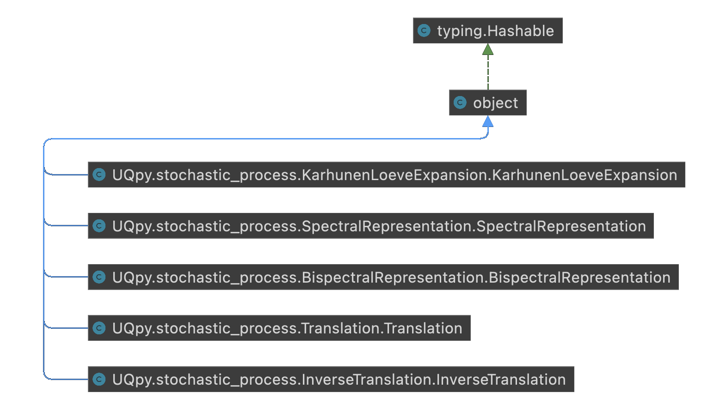

UQpy architecture
Distributions
The UML diagram below explains the class hierarchy of the distributions module. In case of distributions a series of
abstract base classes are defined. Distribution is the basis, with classes such as Distribution1D and DistributionND abstract base classes refining this hierarchy according to the distribution dimensionality.
The 1D case if further refined with DistributionContinuous1D and DistributionDiscrete1D to take into
account different types of random variables. Finally, the Copula abstract base class serves as the common
interface for all copula implementations. Note that all the above are abstract classes and cannot be directly
instantiated.
{kind=link}
Sampling
The sampling module contains multiple methods and the UML diagrams below are focused to one method at a time to reduce
the complexity of the graphs. Before starting with hierarchy of each different method, we should mention that the
classes MonteCarloSampling, SimplexSampling and ImportanceSampling are independent object
and do not extend any baseclass.
Starting with the Markov Chain Monte Carlo algorithms, the diagram below makes obvious the dependency between the
different implementations. the MCMC abstract base class includes the common functionality between the methods,
while the specific algorithms only override the abstract methods of that base class.
{kind=link}
The case of stratified sampling is more elaborate, as it includes a family of algorithms. The abstract base class
StratifiedSampling serves as the interface between the concrete implementations LatinHypercubeSampling,
TrueStratifiedSampling and RefinedStratifiedSampling. In the case of LatinHypercubeSampling
the Strategy Design Pattern was used to extract the Latin Hypercube criteria from the sampling. Here the
Criterion base class provides the interface that the specific criteria need to override. In a similar manner,
the geometric stratification in the case of TrueStratifiedSampling is extracted under the
Strata abstract base class. Last but not least, in the case of RefinedStratifiedSampling
the different strata refinement strategies are extracted using the Refinement baseclass as their common interface.
{kind=link}
In the case of AdaptiveKriging sampling methods, again the different learning functions are extracted into
separate classes under the common LearningFunction class.
{kind=link}
Transformations
The transformations module is one of the most simple in UQpy with three independent classes available, namely
Nataf, Correlate and Decorrelate.
{kind=link}
Stochastic Processes
The stochastic process module is has again simple structure with five independent classes available.
{kind=link}
Run Model
In case of the RunModel module, the final algorithm to run is constructed by object composition of two different inputs.
Initially, the type of the model to run, with PythonModel and ThirdPartyModel being the two
available options, while the execution part is delegated to either the SerialExecution or ParallelExecution
alternatives.
{kind=link}
Inference
Compared to v3, the inference module has undergone a major refactoring towards v4. The initial InferenceModel
class that contained all cases of computing the posterior log-likelihood is now split into three independent cases. Given
the inference models, backward uncertainty propagation can be performed be choosing between MLE,
BayesParameterEstimation to infer the parameter distributions of a model, or InformationModelSelection
and BayesModelSelection to select the model that best describes the available data. In the case of
InformationModelSelection the selection criteria have been extracted into separate classes under the
InformationCriterion baseclass. Similarly, the evidence methods of BayesModelSelection are also
parameters that implement the abstract base class EvidenceMethod.
{kind=link}
Reliability
The reliability module maintained the same class hierarachy as in v3, with SubsetSimulation being an
independent class and FORM and SORM methods providing concrete implementations to the
TaylorSeries abstract base class.
{kind=link}
Surrogates
Another module that has extensively restructured in v4 is the surrogates. Apart from the SROM method which
was retained as an independent algorithm, the previous Kriging functionality was removed. It is now replaced with
GaussianProcessRegression. The functionality of the Gaussian is constructed using object composition,
and the specific implementation of Regression and Kernel abstract base classes. An additional
functionality of constrained surrogates is added by implementing the ConstraintsGPR abstract class. The
functionality of PolynomialChaosExpansion was rewritten from scratch to address some performance issues of v3.
The Strategy Design pattern was used here as well, with three abstract base classes Polynomials,
PolynomialBasis ans Regression serving as the interface for the concrete classes.
{kind=link}
Sensitivity
The sensitivity module has significantly benefited from the enhanced of modularity of the code introduced in v4.
Apart from the existing independent MorrisSensitivity method, the PceSensitivity was added as an
independent class. Finally, based on the common Sensitivity abstract base class, a series of new algorithms
were introduced such as SobolSensitivity, GeneralizedSobolSensitivity, ChatterjeeSensitivity
and CramerVonMisesSensitivity.
{kind=link}
Dimension Reduction
The final but one of the most import modules in UQpy is dimension reduction. The SnapshotPOD and
DirectPOD methods were retained under the POD abstract base class. HigherOrderSVD method
was introduced as independent class, while special attention was given to Grassmann Manifolds.
The abstract base class GrassmannProjection serves as an interface for different methods to project data on
the Grassmann Manifold, with GrassmannOperations and GrassmannInterpolation support all related operations.
{kind=link}